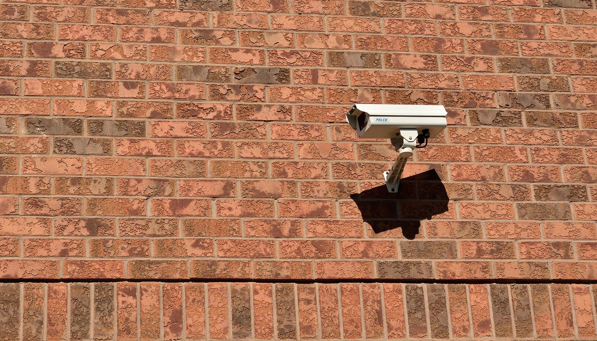
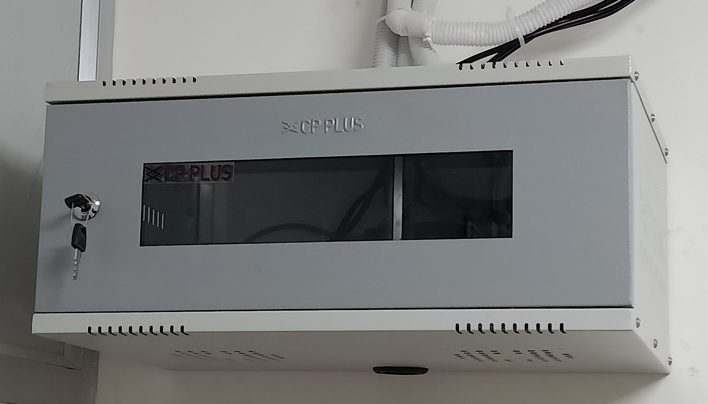

Logiciel libre · aucun lien affilié sur cette page · prix relevés le 2 oct. 2026
Caméras sans abonnement : Frigate garde la vidéo chez vous — ce que ça coûte vraiment face à Ring

Les caméras connectées ont un piège : l'appareil ne coûte presque rien, mais voir ce qu'il filme devient un abonnement. Chez Ring, l'offre d'entrée est à 39,99 €/an par appareil (relevé le 2 oct. 2026), avec des options payantes par-dessus. Frigate, logiciel libre, enregistre et analyse la vidéo sur votre machine, sans abonnement. Reste à savoir ce que ce « sans abonnement » déplace comme dépense et comme responsabilité.
Aucun lien affilié sur cette page — voir comment ça marche Prix lus le 2 oct. 2026 Licence libre MIT
En bref
- Le logiciel est gratuit. Frigate est publié sous licence libre MIT : il tourne chez vous, sans abonnement. (Le projet propose aussi un service optionnel, « Frigate+ », à 50 $/an — un extra, pas une obligation.)
- L'abonnement Ring (relevé le 2 oct. 2026 sur ring.com/fr) : « Ring Protect Solo » à 3,99 €/mois, facturé 39,99 €/an par appareil — par caméra, pas par foyer. Options en plus : IA +4 €/mois/caméra, enregistrement continu +3 €/mois.
- Ce qu'il faut acheter à la place : des caméras compatibles (Reolink est le partenaire officiellement documenté par Frigate) et une petite machine pour enregistrer. Nous n'avons pas chiffré ces postes, donc ils n'apparaissent dans aucun total ici.
- Ce que fait Frigate : enregistrement continu, détection d'objets par IA (personne, voiture, animal…), recherche dans les séquences, alertes — le tout en local, sans que la vidéo quitte votre réseau.
- Ce qu'il ne fait pas : il ne remplace pas la redondance d'un cloud. Un enregistreur chez vous peut être volé ou perdre son disque — c'est le scénario qu'un service distant couvre.
« Caméra connectée » ne veut pas dire « vidéo chez vous »
Une caméra grand public envoie par défaut ses images vers un service distant, et c'est ce service qu'on paie. Un NVR (enregistreur vidéo réseau) fait l'inverse : il prend le flux des caméras et l'enregistre sur une machine locale. Frigate est un NVR logiciel : il tourne sur votre matériel, il analyse les images sur place (détection de personnes, véhicules), et il n'envoie rien à un tiers.
La question n'est donc pas « quelle caméra est la meilleure », mais « qui garde l'enregistrement, et qui paie pour le regarder » :
Modèle local — vous achetez les caméras et la machine, une fois. Aucun abonnement pour regarder vos propres enregistrements. En échange, l'installation, la sécurité et la sauvegarde sont à votre charge. Comparaison des deux modèles, établie le 2 octobre 2026. Les montants cités proviennent des pages publiques des fournisseurs ; les prix des caméras et de la machine ne sont pas chiffrés ici.
Autrement dit : Frigate n'est pas « gratuit », il est sans abonnement. Le paiement se déplace vers le matériel et vers le temps que vous passez à l'administrer.
Les prix : l'abonnement qui grimpe avec le nombre de caméras
Le point que les fiches produit n'affichent pas en grand : chez Ring, l'abonnement se paie par appareil. Une maison avec trois caméras ne paie pas une fois, mais trois fois. Voici le coût annuel de l'offre d'entrée, multiplié par le nombre de caméras (à partir du prix relevé sur ring.com/fr le 2 oct. 2026).
Ring Protect Solo — coût annuel selon le nombre de caméras (€/an, base au 2 oct. 2026)
Barres proportionnelles aux montants ci-dessus, base à zéro. Prix de base relevé le 2 octobre 2026 sur ring.com/fr (« Ring Protect Solo », 3,99 €/mois), multiplié par le nombre de caméras puis par 12. Il ne comprend PAS les options payantes supplémentaires (reconnaissance IA, enregistrement continu) ni le prix des caméras elles-mêmes.
| Où | Quoi | Prix relevé le 2 oct. 2026 | Ce que le prix ne comprend pas |
|---|---|---|---|
| ring.com/fr | Ring Protect Solo — offre d'entrée | 3,99 €/mois (39,99 €/an) par appareil | les caméras ; les options IA et enregistrement continu |
| ring.com/fr | Option reconnaissance IA | +4 €/mois par caméra | — |
| ring.com/fr | Option enregistrement continu | +3 €/mois | — |
| frigate.video/plus | Frigate+ (service optionnel de modèles affinés) | 50 $/an | n'est pas requis pour utiliser Frigate |
La lecture honnête : le « sans abonnement » de Frigate est réel pour regarder ses enregistrements, mais il ne signifie pas « coût zéro ». Vous achetez des caméras et une machine, et Frigate+ (50 $/an) reste un extra facultatif. Ce que vous économisez, c'est la mensualité par caméra — et c'est elle qui grimpe dès que le nombre d'appareils augmente.
Les quatre pièges d'un NVR local
1. La détection par IA demande de la puissance
Frigate ne se contente pas d'enregistrer : il analyse les images pour distinguer une personne d'un chat ou d'une branche qui bouge. Cette analyse consomme des ressources, et sur une petite machine elle peut saturer. C'est ce qui décide si votre installation est fluide ou si elle « rate » les détections. Les tutoriels montrent l'interface ; ils parlent rarement du matériel d'analyse qu'elle exige.
2. La marque des caméras change tout à la configuration
Frigate fonctionne avec des caméras compatibles ONVIF/RTSP, mais la documentation officielle consacre une section entière à Reolink — c'est le partenaire mis en avant, avec des réglages éprouvés. Choisir une caméra hors de ce qui est documenté, c'est accepter de chercher soi-même les bons paramètres. Le logiciel est libre ; la compatibilité, elle, se mérite.
3. Le local n'est pas « plus sûr » automatiquement
C'est l'illusion symétrique de celle du cloud. Garder la vidéo chez soi protège la vie privée — les images ne partent pas chez un tiers. Mais un enregistreur posé dans la maison est exactement ce qu'un cambrioleur emporte : il contient les preuves de son passage. Il faut donc conserver certaines séquences ailleurs, ce qu'un abonnement cloud faisait pour vous.

4. L'accès à distance est la partie que personne ne montre
Consulter ses caméras depuis chez soi est simple. Depuis l'extérieur, c'est une autre affaire : il faut exposer le serveur de façon sûre, ce qui passe en général par un accès chiffré plutôt que par l'ouverture d'un port sur Internet. C'est précisément l'étape où une installation mal protégée devient une caméra publique. Réglez ce point avant de brancher la première caméra.
Trois chemins, selon votre situation
Aucun de ces trois n'est « le bon » : ils ne répondent pas à la même situation. Le seul choix regrettable est d'installer un NVR local sans sauvegarde externe des séquences importantes — c'est le moyen de perdre ses preuves au moment précis où elles serviraient.
La checklist avant d'installer
- Comptez par caméra, pas par foyer. L'abonnement d'entrée chez Ring est facturé par appareil : 39,99 €/an × le nombre de caméras.
- Vérifiez la puissance d'analyse. La détection par IA est le poste le plus exigeant ; dimensionnez la machine pour ça, pas seulement pour l'enregistrement.
- Restez sur des caméras documentées. Reolink est le partenaire mis en avant par la documentation de Frigate ; hors de cette liste, comptez du temps de réglage.
- Prévoyez une sauvegarde hors du logement pour les séquences qui comptent : un enregistreur local peut être volé.
- Réglez l'accès distant avant de brancher : consultation locale seulement, ou accès chiffré depuis l'extérieur ?
- Sachez que Frigate+ est optionnel. Le logiciel fonctionne sans l'abonnement de 50 $/an ; n'ajoutez-le que si vous voulez des modèles affinés.
Par où commencer, concrètement
Ces liens sont ceux du projet et des sources. Aucun n'est affilié : ils sont là pour que vous vérifiiez à la source.
- Le projet : frigate.video — présentation et documentation officielles.
- Le code : dépôt blakeblackshear/frigate sur GitHub (MIT).
- Les caméras compatibles : la documentation « Cameras » détaille les marques prises en charge, dont Reolink.
- Le service optionnel : Frigate+, si vous voulez des modèles affinés.
Le réflexe qui évite la mauvaise surprise : régler d'abord l'accès distant et la sauvegarde des séquences importantes, et seulement ensuite comparer les caméras et les machines.
Questions
Frigate est-il vraiment gratuit ?
Le logiciel principal oui, sous licence MIT. Le projet propose aussi un service optionnel, Frigate+ (50 $/an relevé le 2 octobre 2026), pour des modèles affinés — mais Frigate fonctionne sans lui.
Combien coûte Ring comparé à un NVR local ?
Chez Ring (relevé le 2 octobre 2026) : 3,99 €/mois, soit 39,99 €/an par appareil, plus les options (IA +4 €/mois/caméra, enregistrement continu +3 €/mois). Un NVR local n'a pas d'abonnement : vous payez caméras et machine, une fois.
Faut-il des caméras Reolink ?
Non, mais Reolink est le partenaire officiellement documenté par Frigate. D'autres marques compatibles ONVIF/RTSP fonctionnent, avec parfois plus de réglages à faire soi-même.
Un NVR local est-il plus sûr ?
Pour la vie privée, oui. Pour la robustesse, non, pas automatiquement : un enregistreur chez vous peut être volé ou perdre son disque. Gardez une copie des séquences importantes ailleurs.
Cette page contient-elle des liens affiliés ?
Non, aucun à ce jour. Le programme d'affiliation Reolink (via Awin) est enregistré chez nous comme candidat — aucun compte créé, aucun lien posé. Si cela change, le lien sera étiqueté et cet encadré daté.
Comment cette page est faite
- Aucun lien affilié ici. Le programme d'affiliation de Reolink (via le réseau Awin, commission échelonnée et cookie de 30 jours) a été relevé le 2 octobre 2026. Il est enregistré chez nous comme candidat : aucun compte créé, aucun lien posé. Si un lien affilié arrive un jour, il sera étiqueté « lien affilié — on est payé si vous souscrivez » avec
rel="sponsored", et cet encadré sera daté. - Les prix Ring (3,99 €/mois par appareil, options à 4 € et 3 €/mois) ont été relevés sur ring.com/fr le 2 octobre 2026. Le prix de Frigate+ (50 $/an) provient de la page officielle du projet (frigate.video/plus), relevée le même jour.
- Ce que nous ne savons pas est écrit comme tel : le prix des caméras, le prix de la machine d'analyse, et la commission nette d'un éventuel programme d'affiliation. Rien de tout cela n'apparaît dans un total.
- Les affirmations sur le logiciel (Frigate libre MIT, Reolink mis en avant par la documentation officielle) proviennent du dépôt et de la documentation du projet, consultés le 2 octobre 2026.
- Nous ne fabriquons aucun avis, aucun témoignage et aucune statistique.
- Corrections : si un prix a changé ou si nous nous sommes trompés, écrivez-nous, nous corrigeons et nous datons la correction.
Sources
- Dépôt GitHub blakeblackshear/frigate — 36 324 étoiles, licence MIT, dernier envoi le 2 octobre 2026 (consultés via l'API GitHub le 2 octobre 2026).
- Documentation officielle Frigate — section « Cameras », dont les pages dédiées à Reolink (caméras prises en charge) — lue le 2 octobre 2026.
- Page des offres Ring (ring.com/fr) : « Ring Protect Solo » à 3,99 €/mois ; option reconnaissance IA +4 €/mois par caméra ; option enregistrement continu +3 €/mois — relevés le 2 octobre 2026.
- Page officielle Frigate+ (frigate.video/plus) : abonnement 50 $/an, 12 modèles affinés — relevée le 2 octobre 2026.
- Programme d'affiliation Reolink (réseau Awin, commission échelonnée, cookie 30 jours) — relevé comme candidat le 2 octobre 2026, aucun compte créé.
- Photos : caméra fixe sur mur de brique — Raysonho, CC0 ; installation de caméras — CC BY 4.0. Toutes deux via Wikimedia Commons.
Avis clients
Avis sur ce guide, publiés après vérification. Chaque avis négatif reçoit une réponse publique — c'est comme ça qu'on s'améliore.
Les premiers avis seront publiés ici dès que de vrais lecteurs en enverront.